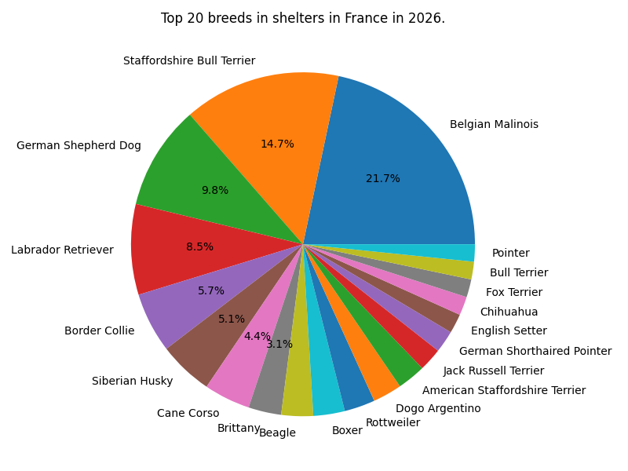

Now that we have some data about shelter dogs in France, we can ask ourselves about why does these dogs are in shelters.
Let's first evaluate which dog breeds are the most represented in shelters.
We can see that the top 20 most represented dog breeds have a majority of index 5 over 5 for the "Affectionate with family" index. Our hypothesis do not follow the characteristics of the most represented dogs in shelters.
The majority of the dogs in shelter have an "Easy to train" index of 5 over 5, we cannot draw conclusions about training abilities.
Indeed, a large majority of shelter dogs have very large or large size. We can make the assumption that this is a recurrent excuse for abandoning dogs.
We can see that the most adopted breeds are the same as the most abandoned. Mainly because they are overrepresented in the shelters. This result may reflect a cycle of adoption and re-abandonment, potentially linked to a lack of information about breed-specific needs, which is precisely what our dataset aims to address.